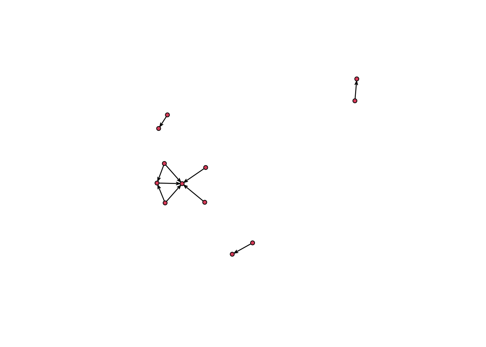
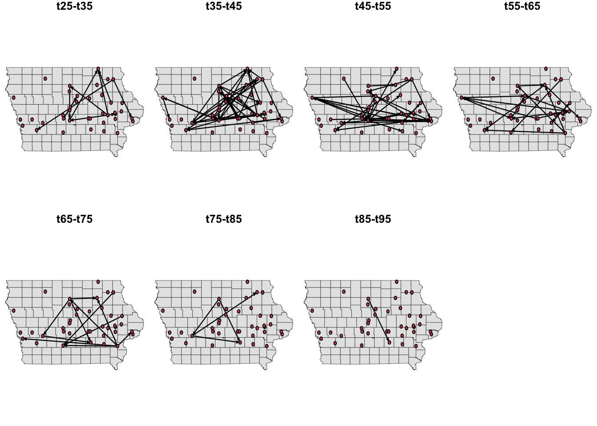
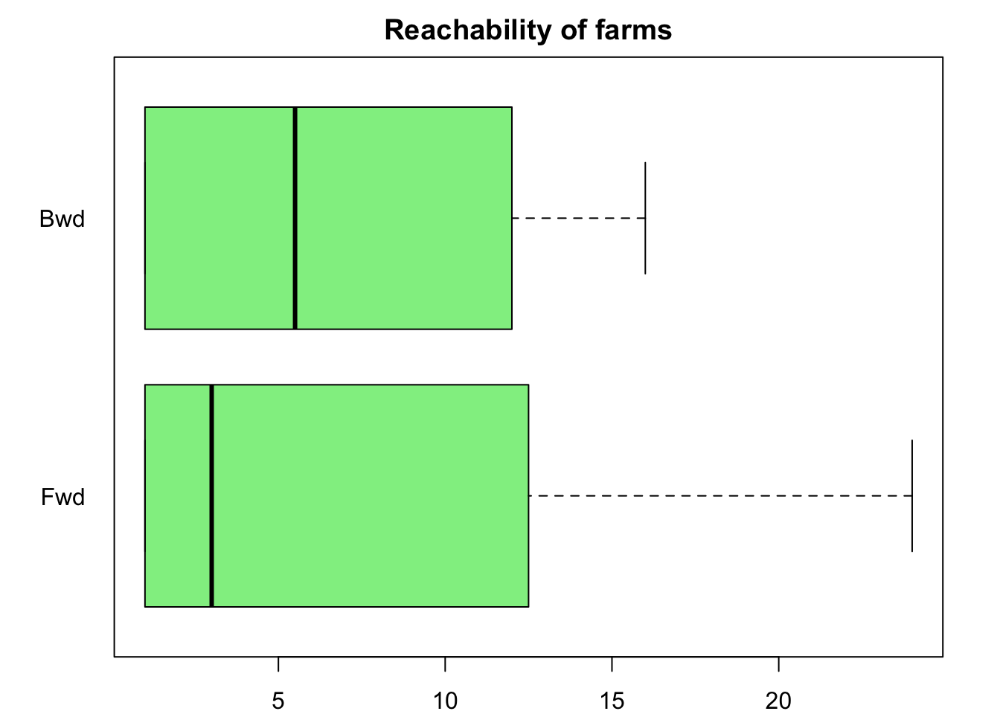
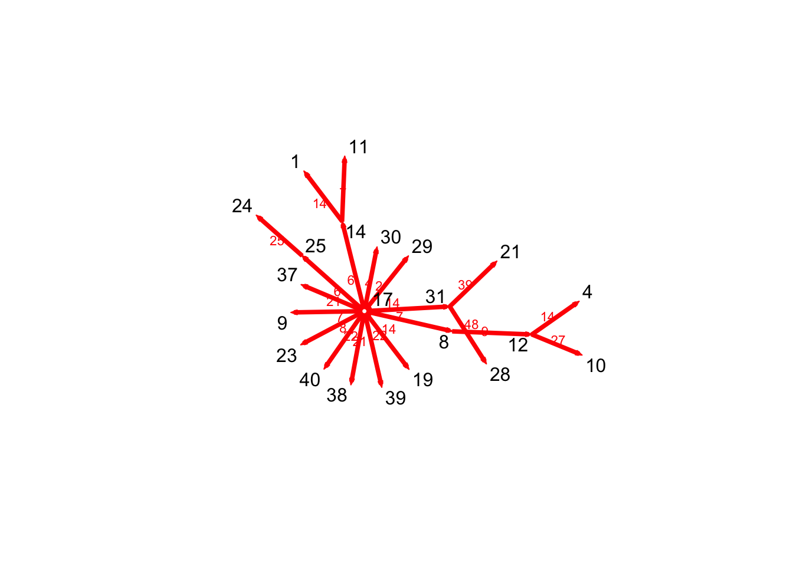
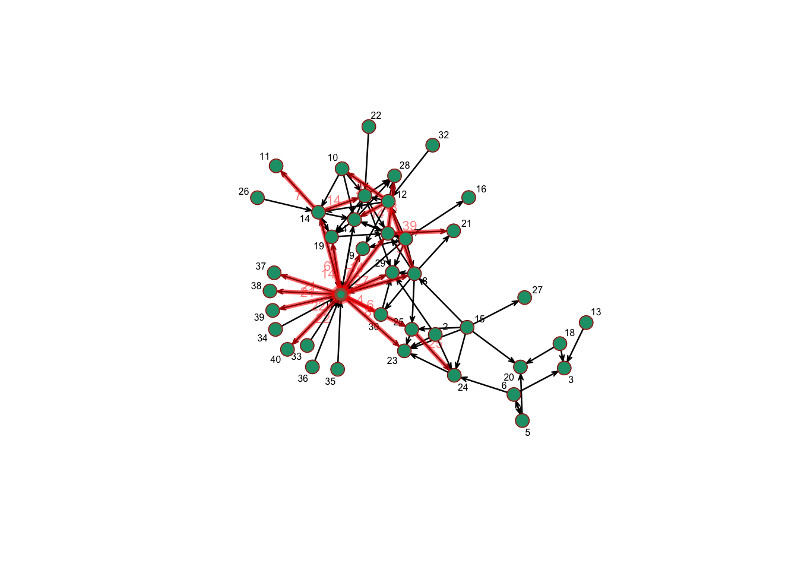
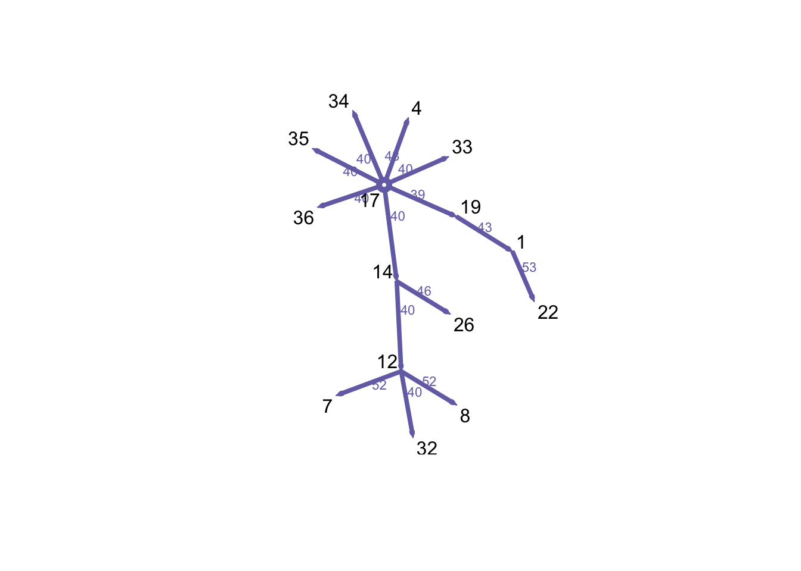
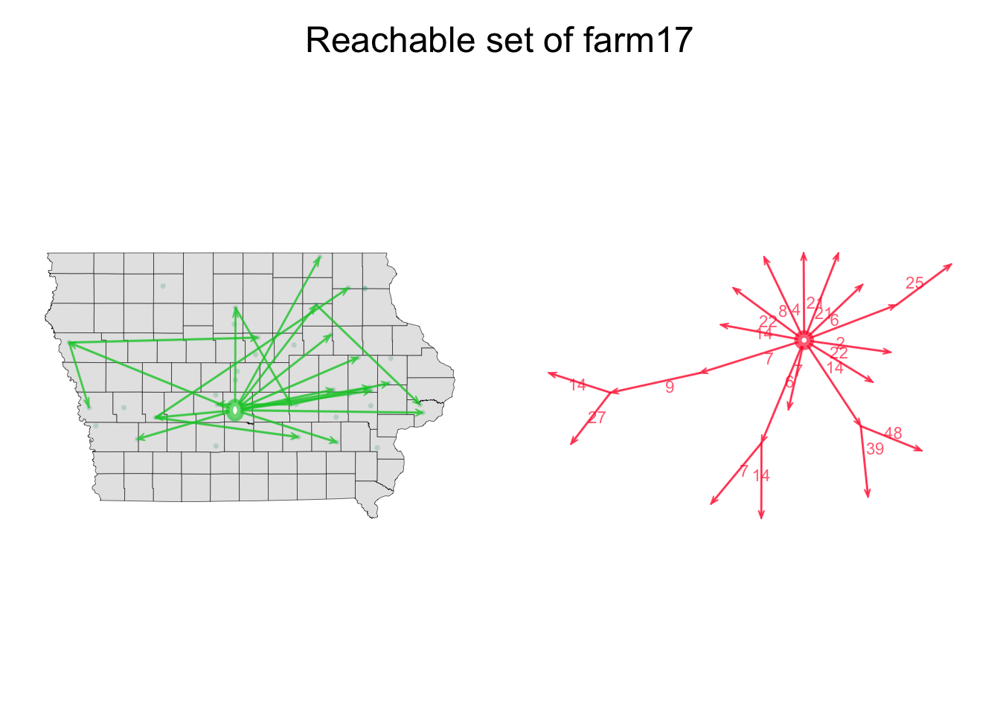
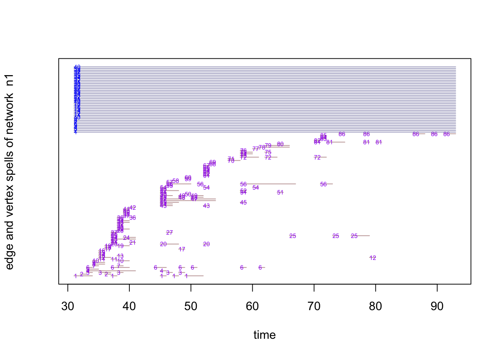

Lab 4
Let’s start by importing the data for edges, node attributes, and the shapefile of the area of study.
colpal <- RColorBrewer::brewer.pal(4, "Dark2")
library(dplyr)
library(sf)
library(tidygraph)
# Load data of movements and nodes
net <- STNet::SwineMov
node_attrib <- STNet::SwinePrem %>%
mutate(idch = as.character(id)) # Format id as character to use it later
# Load the spatial object
IO <- st_read(system.file("data/Io.shp", package = "STNet"), quiet = T)1 Introduction to dynamic networks
The networkDynamic package has functions that allow to analyze and visualize a network and incorporate temporality to it. To incorporate a temporal window, we need to specify the start time (onset) and end time (termini). For the purposes of this example we will assume that the contact time is one week.
# Load libraries
## For dynamic networks
library(networkDynamic)
# To visualize and get network statistics
library(ndtv)
library(tsna)
net <- net %>%
mutate(date = as.Date(date, format = '%m/%d/%y'), # Format the variable as date:
year = as.numeric(strftime(date,format = "%Y")), # Create a new variable for year from the date
w = as.numeric(strftime(date,format = "%V"))) # Create a new variable to show the week of the yearIn this analysis we will use a one week resolution. Since we have no information on the duration of the contact, we will assume that the duration is one week. As we have multiple years, we need to number the weeks from the first week in which we have data to the last week with data. For this, we will use an offset that will add 53 weeks or 106 depending on the year.
# Create the onset starting from 2015,
# Use ifelse inside another ifelse to determinate the offset
net$w_onset<-as.numeric(ifelse(net$year==2015 #First condition
,net$w # If the condition is true, only the number of week, if not, we use other ifelse
,ifelse(net$year==2016 # Second condition
,net$w+53 # If the condition is true, an offset of 53 weeks is added, 106 weeks otherwise
,net$w+106)))
# Now we state that the duration of the contact is one week
net$w_termini<-net$w_onset+1Now we will create a dynamic network with this information. The networkDynamic function is able to reproduce the data in different formats. Here we will use a data.frame format. The function will read the data and will expect a list of variables following this order: head, tail, onset and termini, where: head = Origins. tail = Destination. onset = Start of contact. termini = End of contact.
n1 <- networkDynamic(edge.spells = net[c("w_onset", "w_termini", "id_dest", "id_orig")])## Initializing base.net of size 40 imputed from maximum vertex id in edge records
## Created net.obs.period to describe network
## Network observation period info:
## Number of observation spells: 1
## Maximal time range observed: 31 until 93
## Temporal mode: continuous
## Time unit: unknown
## Suggested time increment: NANow we can add attributes to the data. These attributes can be static or change during the period. Note: the functions set.edge.attribute() and set.vertex.attribute() from the package network can be masked by other functions with the same name that are present in other packages, such as the igraph package. If we have already loaded these other packages with functions in conflict, we will need to specify which package contains the function that we want to use to prevent wrong calls (i.e. by typing network::set.edge.attribute()).
set.edge.attribute(n1, #Name of the network
"pigs.moved", # Name of the attribute
net$pigs.moved) # ValuesWe can then just add the unchanging vertex attribute data
set.vertex.attribute(n1,"name", as.character(node_attrib$name))
set.vertex.attribute(n1,"lat",node_attrib$lat)
set.vertex.attribute(n1,"long",node_attrib$long)
set.vertex.attribute(n1,"type",as.character(node_attrib$farm_type))Once we have the node attributes, we can print them by calling the networkDynamic object that we have just created
n1## NetworkDynamic properties:
## distinct change times: 51
## maximal time range: 31 until 93
##
## Includes optional net.obs.period attribute:
## Network observation period info:
## Number of observation spells: 1
## Maximal time range observed: 31 until 93
## Temporal mode: continuous
## Time unit: unknown
## Suggested time increment: NA
##
## Network attributes:
## vertices = 40
## directed = TRUE
## hyper = FALSE
## loops = FALSE
## multiple = FALSE
## bipartite = FALSE
## net.obs.period: (not shown)
## total edges= 86
## missing edges= 0
## non-missing edges= 86
##
## Vertex attribute names:
## lat long name type vertex.names
##
## Edge attribute names:
## active pigs.movedThis object summarizes the network including the period and number of vertices and edges
list.edge.attributes(n1)## [1] "active" "na" "pigs.moved"list.vertex.attributes(n1)## [1] "lat" "long" "na" "name" "type"
## [6] "vertex.names"If we want to see the values of these attributes, we can use get.vertex.attribute():
get.vertex.attribute(n1, "vertex.names")## [1] 1 2 3 4 5 6 7 8 9 10 11 12 13 14 15 16 17 18 19 20 21 22 23 24 25
## [26] 26 27 28 29 30 31 32 33 34 35 36 37 38 39 40get.vertex.attribute(n1,"type")## [1] "sow farm" "sow farm" "nursery" "sow farm" "GDU" "GDU"
## [7] "GDU" "sow farm" "nursery" "nursery" "nursery" "nursery"
## [13] "nursery" "nursery" "finisher" "finisher" "finisher" "finisher"
## [19] "sow farm" "finisher" "nursery" "sow farm" "sow farm" "sow farm"
## [25] "GDU" "sow farm" "nursery" "nursery" "nursery" "nursery"
## [31] "GDU" "boar stud" "sow farm" "sow farm" "sow farm" "sow farm"
## [37] "sow farm" "sow farm" "sow farm" "sow farm"We can also obtain more information of the network, such as the activity by using get.vertex.activity() or get.edge.activity()
summary(get.vertex.activity(n1, as.spellList=TRUE))## onset terminus vertex.id onset.censored terminus.censored
## Min. :31 Min. :93 Min. : 1.00 Mode:logical Mode:logical
## 1st Qu.:31 1st Qu.:93 1st Qu.:10.75 TRUE:40 TRUE:40
## Median :31 Median :93 Median :20.50
## Mean :31 Mean :93 Mean :20.50
## 3rd Qu.:31 3rd Qu.:93 3rd Qu.:30.25
## Max. :31 Max. :93 Max. :40.00
## duration
## Min. :62
## 1st Qu.:62
## Median :62
## Mean :62
## 3rd Qu.:62
## Max. :62summary(get.edge.activity(n1, as.spellList=TRUE))## onset terminus tail head
## Min. :31.00 Min. :33.00 Min. : 1.00 Min. : 1.00
## 1st Qu.:38.00 1st Qu.:39.00 1st Qu.: 6.00 1st Qu.: 9.75
## Median :46.00 Median :48.00 Median :10.00 Median :20.00
## Mean :48.98 Mean :50.57 Mean :12.25 Mean :18.33
## 3rd Qu.:58.00 3rd Qu.:59.00 3rd Qu.:17.00 3rd Qu.:25.00
## Max. :91.00 Max. :93.00 Max. :36.00 Max. :40.00
## onset.censored terminus.censored duration edge.id
## Mode :logical Mode :logical Min. :1.00 Min. : 1.00
## FALSE:144 FALSE:144 1st Qu.:1.00 1st Qu.:15.75
## Median :1.00 Median :40.50
## Mean :1.59 Mean :39.76
## 3rd Qu.:2.00 3rd Qu.:60.25
## Max. :9.00 Max. :86.002 Temporal statistics
We can evaluate several measures at the graph level, vertex level or traces of the period of study of our network using the function tSnaStats().
This function uses arguments to include the networkDynamic object that we have created and to specify the function with the desired statistic that we want to apply (through the argument “snafun=”). For example, if we want to calculate the density of the network in different periods, we will do this:
tSnaStats(n1, snafun = "gden") %>% # "gden" to show graph density
plot(col = colpal[2], lwd = 2, main = "Network density during the study period")In the previous plot we can see that the activity of movements is bigger at the beginning of the time series and slowly decreases over time until reaching approximately zero.
The function tSnaStats() also allows us to use arguments to define specific periods of time from which we want to calculate the statistics
tSnaStats(n1, snafun = "grecip", start = 30, end = 60) %>%
plot(main = "Network Reciprocity during the interval 30-60", col = colpal[3], lwd = 2)We can also see node-level statistics (e.g. betweenness) using the next function.
apply(tSnaStats(n1, snafun = "betweenness"), 1, mean) %>%
plot(type = "l", lwd = 2, col = colpal[4])3 Plotting the network
We can use the function plot() to see the network object, but we can only see the static network because we are not defining any time interval
plot(n1,mode="kamadakawai") If we want to see a specific period of time, we need to define it. For this, we can use the function network.extract() to extract a specific period in the network and then use plot() to show this extract.
# Plot an interval of time
n1 %>%
network.extract(onset = 1, terminus = 60) %>%
plot()# Plot a specific timepoint and remove isolates
n1 %>%
network.extract(at = 35) %>%
plot(displayisolates = F)
Now we are going to create a plot with multiple periods of time
# First we create a function to plot the network extract we want:
plot.extract <- function(n, onset, terminus){
n %>% # The input network
network.extract(onset = onset, terminus = terminus) %>% #Extract the time interval
plot(vertex.cex = 1.5, main = paste0("t", onset, "-", "t", terminus)) #Plot the network
}
# Then we define out time intervals
O <- seq(from = 25, to = 95, by = 10)
# We set the layout we want for the plot:
par(mfrow = c(2,4), mar = c(0,0,1,0))
# We use a for loop to plot the network at the defined time intervals.
for(i in O){
plot.extract(n1, onset = i, terminus = i + 10)
}
We can use different layouts to plot the extracts of the network. Now, we are going to plot the nodes in their spatial location. For this, we will have to make a little modification of our previous function so we can add the coordinates.
# We set fixed coordinates from the longitude and latitude
a <- as.matrix(node_attrib[, c("long", "lat")])
# Modify the function:
plot.extract <- function(n, onset, terminus, Bg){
plot(Bg, col = "grey90", lwd = 0.3, main = paste0("t", onset, "-", "t", terminus))
n %>% # The input network
network.extract(onset = onset, terminus = terminus) %>% #Extract the time interval
plot(vertex.cex = 1, coord=as.matrix(a), new = F) #Plot the network
}
# We set the layout we want for the plot:
par(mfrow = c(2,4), mar = c(0,0,1,0))
# We use a foor loop to plot the network at the defined time intervals.
for(i in O){
plot.extract(n1, onset = i, terminus = i + 10, Bg = IO$geometry)
}
4 Temporally reachable sets
The reachability of a farm help us to identify important nodes in the network that may have a key role in the disease spread. Forward reachability (“fwd”) refers to all the nodes than can be reached from a given node \(v_i\) and backward reachability (“bkwd”) refers to those nodes that reach a given node \(v_i\). We can visualize the distribution of the forward and backward reachability using boxplots
fwd <- tReach(n1, "fwd")
bwd <- tReach(n1, "bkwd")
par(mar=c(2,4,2,2))
boxplot(fwd, bwd, col = "lightgreen", horizontal = T, yaxt = 'n', main = "Reachability of farms")
axis(2, at = c(1,2), labels = c("Fwd", "Bwd"), las=2, lty = 0)
We can also use a dot plot to explore whether any interesting relationship between both types of reachability exists.
plot(fwd, bwd, xlab = "Fwd", ylab = "Bwd", pch = 16, col = rgb(0, 155, 50, max=255, alpha=100))Now, let’s have a look at the farms with the highest forward reachability:
data.frame(id = 1:length(fwd), fwd, bwd) %>%
arrange(desc(fwd)) %>%
head(10)## id fwd bwd
## 1 7 24 2
## 2 8 22 6
## 3 17 22 15
## 4 4 21 12
## 5 14 21 12
## 6 12 16 7
## 7 22 14 1
## 8 1 13 12
## 9 19 13 15
## 10 26 13 1It looks like node (“id”) 7 presents the highest number of reachable farms.
We can visualize the reachable set using the functions tpath and transmissionTimeline. Both of them provide the node id and the time when the contact happened. The first function allow us to visualize the nodes spatially and the second one shows them in a nice timeline. Let’s start with the first one.
P17 <- tPath(n1, 17, direction = "fwd")
plot(P17)
We can also visualize the paths in the full network.
plotPaths(n1, P17, vertex.col = colpal[1], label.cex = 0.5, vertex.cex = 2)
A better way to visualize the paths trough the time period is using the function transmissionTimeline(). In this visualization, the x axis represents the time when the event happened and the y axis represents the generation or steps that happened to reach that node
transmissionTimeline(P17,jitter=T,
main='Earliest forward path from vertex 17')We can also see the backward reachability, which represents the set of nodes that reach a specific node over a time period.
P17 <- tPath(n1, 17, direction = "bkwd", type = "latest.depart")
plot(P17, edge.col = colpal[3])
Now we will create a function to show the paths in a spatial and non-spatial plot.
MaPaths <- function(Net, v, direction, Pts, coords, BG){
# Settings for the visualization arrangement:
par(mfrow = c(1,2), oma = c(0, 0, 2, 0), mar = c(1, 1, 1, 1))
# Geth the path for the node we want
P1 <- tPath(Net, v = v, direction = direction)
# Plot the map that will be used for background
plot(BG, col = "grey90", lwd = 0.3, axes = F)
# add the farm locations:
points(Pts[, c("long", "lat")], pch = 16, cex = 0.5, col = rgb(0, 150, 100, max = 255, alpha = 50))
# add the edges to the map
plot(P1, coord = coords, displaylabels = F, edge.label.col = rgb(0,0,0,0), edge.lwd = 2, vertex.col = "white", edge.col = rgb(0, 200, 50, max=255, alpha=166), new = F)
# add the edges on the side for a non-spatial visualization
plot(P1, displaylabels = F,edge.lwd = 2, vertex.col = "white", edge.col = rgb(255, 0, 50, max=255, alpha=166))
# add the text
mtext(paste0("Reachable set of farm", v), outer = TRUE, cex = 1.5)
}
MaPaths(Net = n1, v = 17, direction = "fwd", Pts = node_attrib, coords = a, BG = IO$geometry)
Another way to visualize the network activity is to show the time points when each of the nodes was active. In the following plot, the upper part represents the presence of the node in the network and the lower part represents the activity of the node in the network.
timeline(n1)
5 Animations
We can also create animations to show the evolution of the contact patterns over time using the function render.d3movie(). First we will use the function compute.animation() to set the layout and time frame for the animation.
render.d3movie(n1,
displaylabels=F,
launchBrowser = T,
vertex.cex = scales::rescale(degree(n1), to = c(1, 5)), filename = "Animation01.html") If we would like to take specific frames for the animation, we can show them stacked in a plot using the function timePrism(). This visualization method works better for small networks.
# Define the intervals
compute.animation(n1, animation.mode = "kamadakawai",
slice.par=list(start=30, end=100, interval=1,
aggregate.dur=1, rule='any'))
timePrism(n1, at = c(30, 40, 50, 60), planes = T)